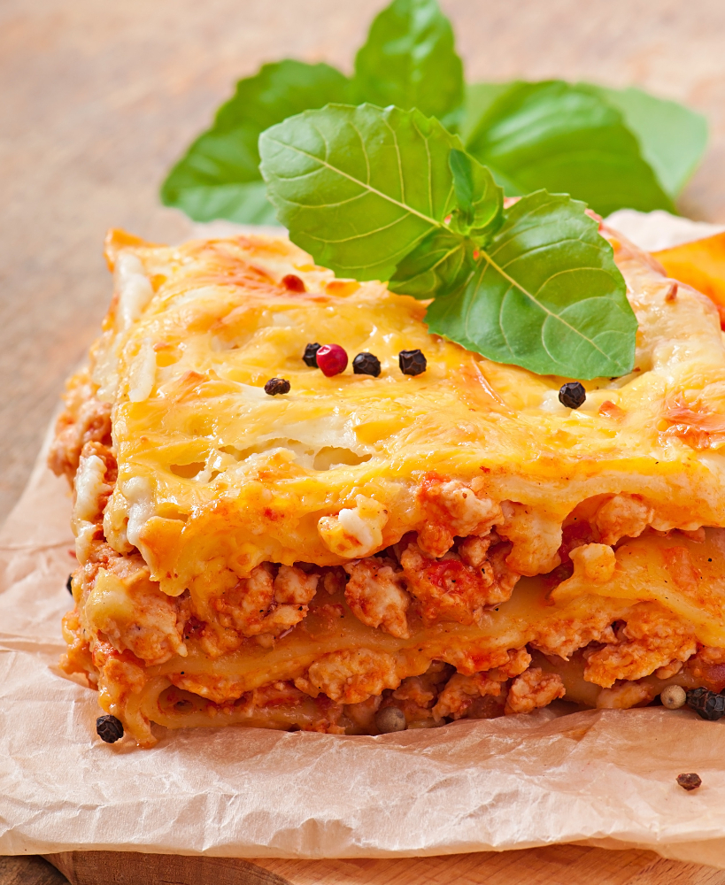

The world's best lasagna

Designed by Freepik
Probably the best lasagna
This easy to use recipe will bring you the best lasagna. Enjoy the cooking!
Ingredients
- Meat: Lean ground beef
- Onion and garlic: An onion and two gloves of garlic
- Tomato products: One can of crushed tomatoes, two cans of tomato sauce, two cans of tomato paste
- Sugar: Two tablespoons of white sugar
- Spices ans seasonings: Fresh parsley, dried basil leaves, salt, Italian seasoning, fennel seeds, black pepper
- Lasagna noodles: Store bought or homemade
- Cheese: Parmesan, mozzarella, ricotta
- Egg: One egg
Cooking instructions:
Overview on how to make lasagna
- Make the meat sauce
- Cook the noodles
- Make the ricotta mixture
- Layer the lasagna according to instructions below
- Cover with foil and bake for 15 minutes 375 °f
- Remove the foil and bake the lasagna for another 15 minutes
- Let the lasagna rest before serving
Lasagna layering instruction
- Meat sauce
- Noodles
- Ricotta mixtures
- Mozzarella slices
- Meat sauce
- Parmesan cheese
- Repeat layers
- Top off with remaining Parmesan
Get back to recipe overview